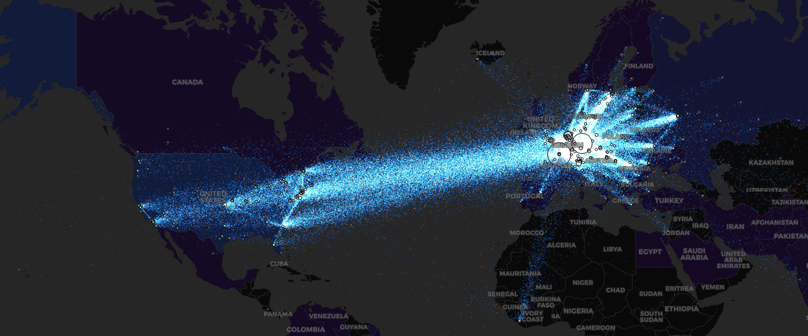

Introduction
In this post we will look at possible ways you can leverage the Dark web in order to perform open source intelligence. We will not dive into the theory behind the dark and deep web because there are numerous posts out there explaining it so we will focus mostly on the juicy stuff and how you can leverage it to your advantage.
We will start with the search engines that are most commonly used to get you around the diving zone. You should also consider finding a trusting site with links to other .onion sites like OnionTree, HiddenWiki, Hunchly and many others In this tutorial i won't be sharing any .onion links since they change often.
Search for the dark
Probably the most commonly used "Google" for the Dark web is the Ahmia Search. It filters by default child pornography sites and many abusive services. It is also supported by the Tor project so it is definitely a reliable source
DuckDuckGo also has it's own dark web search indexer, Haystak which is one of the largest indexers with over 1.5 billion sites indexed since it's creation. Kilos is on of those darker search engines used to find hidden services more commonly used by the cyber criminals and can provide you with ton of information. There is also a newer one called DarkSearch created allegedly by a cyber security researcher in order to help others get around the dark web in pursuit of Threat intelligence information on hacking forums.
Scanning onion sites for vulnerabilites and finding links
So once you find a website you may want to probe it for open ports or check for some common vulnerabilites using nmap but you need to proxy it through TOR using proxychains. You can also use a prebuilt alpine image that has some settings acustomed to using TOR. You can check it out here --> https://github.com/milesrichardson/docker-onion-nmap
Another great tool used for crawling onion sites for other links is TorCrawl. You can clone it from github --> https://github.com/james04gr/TorCrawl.py
If you want to utilize the DarkSearch api from your command line you can use tool called DarkDump which takes a string for an input and provides you with links to onion sites that use that string. You can clone it from here --> https://github.com/josh0xA/darkdump.
Katana is also a great tool that uses Google dorking to find links on both Clear and Dark web --> https://github.com/TebbaaX/Katana.
Other DW OSINT tools of use
I recently stumpled upon a great websites that monitors Tor activity. Check it out here -->https://torflow.uncharted.software/

Searching for credentials on TOR
Although many breached databases and credentials circulate mostly on hacking forums, there is also a posibility that credentials were dumped on an online dump site. Pastebin is the most known bin site on the clear web but there are many others on the dark web including Pastebin that has it's own onion site, Hastebin, zbin, Zerobin, DeepPaste, StrongholdPaste, Pastepad the list go on. you should check those out sinceI used many of thebefore mentioned while performing investigations and they yielded great results.
Making burner accounts on TOR
As many of you know our identity is very important when performing OSINT investigations since we can easily be doxxed if you are not careful. Making accounts will become casual for you when you start entering hacking forums in search for threat intelligence so it is important to have special e-mails for these ocassions. I encourage you to use a Password manager for managing your credentials since ou can get loset very easily and forget about your nicknames. One thing I also recommend is to always use seperate nicknames when registering anywhere on the Dark web!!
One of the most popular privacy oriented mail providers is definitely ProtonMail which has an onion site counterpart. TorBox is also a great choice, along with Mail2Tor and many other. I am leaving this to you to research by yourself.